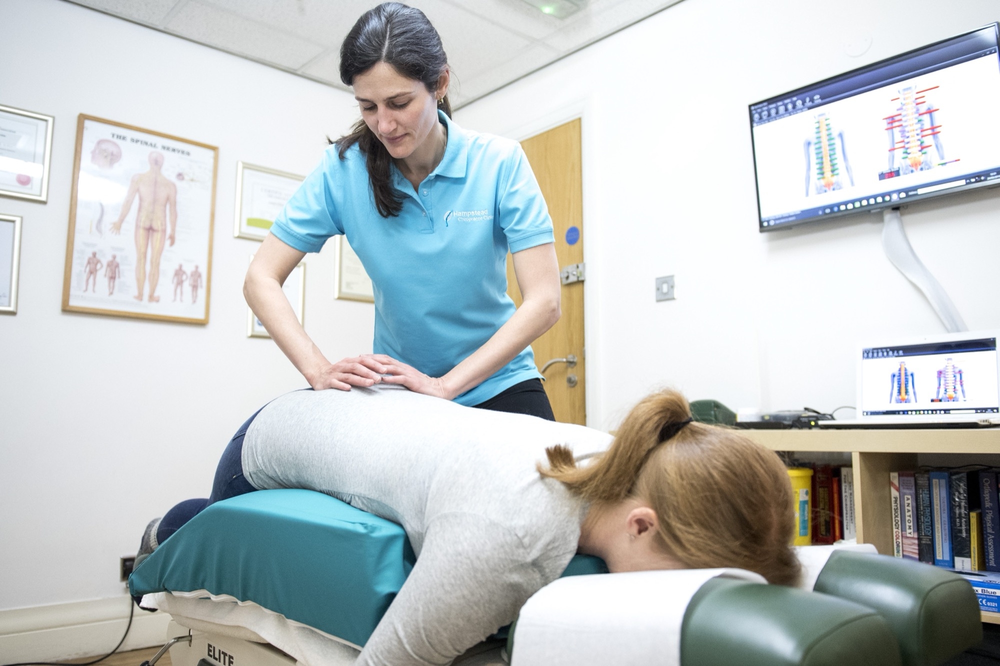
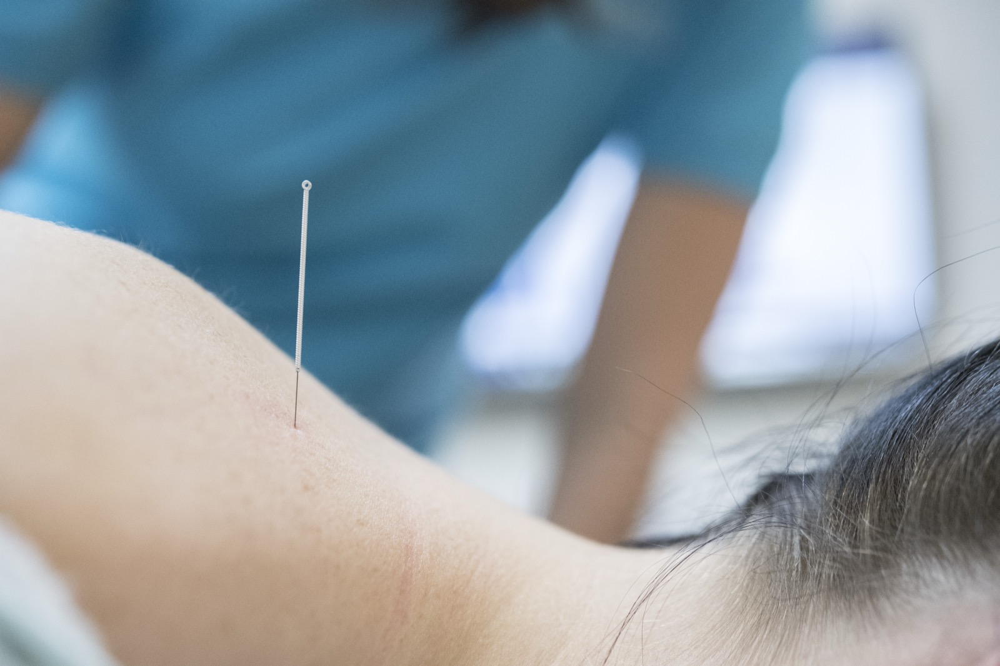
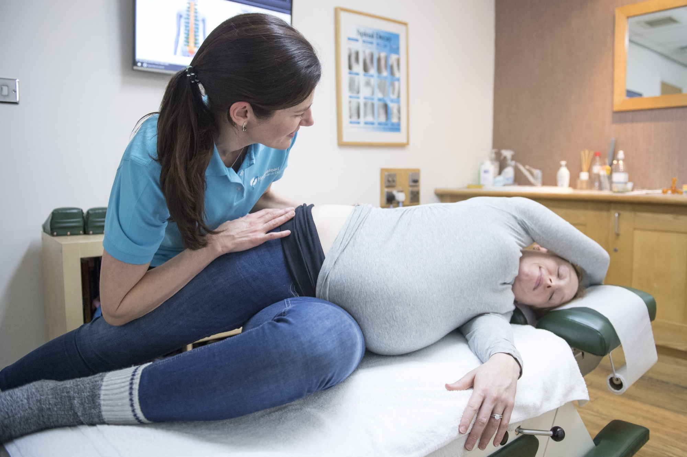

Adult Chiropractic
Treating the cause of the pain, not just the symptoms
Chiropractic is a non-invasive, government-regulated primary healthcare profession — one of the safest interventions for back pain, with one of the highest levels of patient satisfaction in healthcare. It focuses on the examination, diagnosis and management of problems affecting the nerves, muscles and joints of the body.
When joints lose their normal range of motion, they can irritate the nerves that exit the spinal cord, disrupting the tissues and organs those nerves control. Chiropractic adjustments free joints that aren't moving properly — often producing the familiar 'click', simply gas bubbles releasing under pressure, not bones cracking.
Our techniques
A range of manipulation techniques, matched to you
- Diversified — the classic, most widely taught adjustment technique
- Gonstead — a precise, detail-driven analysis and adjustment method
- Thompson — a drop-table technique using gentle, controlled pressure
- Sacro-Occipital Technique — works with the body's own respiratory mechanism
- Activator — a low-force, instrument-assisted adjustment, popular with patients who prefer not to be manipulated by hand
- Dry needling — used alongside adjustments for stubborn muscle tension
We consider your home and work environment, ergonomics, nutrition, sporting activities and stress before agreeing a treatment programme. If your concerns can't be fully addressed in clinic, we have an established referral network to X-ray or MRI facilities, medical specialists, dentists, nutritionists and rehabilitation experts.

Your first visit
What to expect
We take an in-depth case history, then perform a physical examination — postural analysis, spinal analysis, an orthopaedic and neurological exam and a blood pressure check. Based on the findings, your chiropractor will explain your individual mechanics before agreeing an individual treatment programme, including rehabilitation exercises and lifestyle advice.
Treatment may or may not begin on the first visit, depending on your case. Your initial consultation takes 45 minutes to an hour; subsequent treatments are typically 20 minutes or more.
Pricing
Adult chiropractic prices
| Chiropractic | Price |
|---|---|
| Initial Consultation (includes assessment and treatment) | £120 |
| Chiropractic Treatment Session | £60 |
| Treatment Package (5 sessions) | £285 |
| Treatment Package (10 sessions) | £540 |
We accept cash, cheque and card. If you have private health insurance we can invoice your insurer directly — see accepted insurers.
Adult FAQs
Common questions
Will treatment hurt?
Generally, a chiropractic adjustment does not hurt, although there may be some minor discomfort which quickly passes. Follow-up treatments are usually more pleasant as your symptoms improve. If you'd prefer not to be manually adjusted, we can use a low-force technique called an activator instead.
How many treatments will I need?
This varies by condition — we treat each case individually, taking your lifestyle, ergonomics and personal goals into account before agreeing a treatment programme with you.
How qualified is my chiropractor?
Every UK chiropractor must be registered with the General Chiropractic Council (GCC), the profession's statutory regulator. Training typically takes four to five years, leading to a Bachelor's and/or Master's qualification, followed by mandatory ongoing Continuing Professional Development.
How long do treatments take?
Your initial consultation takes 45 minutes to an hour, including a full spinal, orthopaedic and neurological exam. Subsequent treatments typically take 20 minutes or longer if needed.

Baby & Child Chiropractic
The best start in life, treated gently
We love treating babies and children, whatever their age. Our chiropractors are experienced with paediatric care and regularly attend postgraduate courses — Nina van Dyk holds a Post-Graduate Master's in Advanced Chiropractic Paediatrics, one of only a handful of chiropractors in the UK with this qualification.
Treatment uses gentle cranial and spinal paediatric techniques — no more pressure than you'd comfortably place over your own closed eyelid. We have a special baby pillow that supports and moulds around your baby during treatment, and a kids' area with toys to keep older children happy while they wait.
Your first visit
What to expect
We take a complete record of the pregnancy, labour and delivery, along with your baby's feeding, sleeping and developmental patterns. For babies, the examination begins with observation of muscle tone and limb motion, checking primitive reflexes, then gentle palpation of the spine and cranium. Older children are assessed in a similar way to an adult exam. You're with your baby or child throughout.
We'll always explain our findings and gain your consent before any treatment begins. Breast or bottle feeding during treatment is welcomed — some of our smallest patients settle best that way.
Pricing
Baby & child chiropractic prices
| Chiropractic | Price |
|---|---|
| Initial Consultation (includes assessment and treatment) | £120 |
| Treatment for under 16s | £55 |
We also offer a free spinal check to children whose parents are current patients. We accept cash, cheque, card and direct insurance billing.
Baby & child FAQs
Common questions
Is the treatment gentle — will there be any clicking?
Treatment of babies is extremely gentle and uses only light-touch spinal or cranial techniques — there's no 'clicking' involved. As children grow, we may use slightly more direct techniques such as the activator, depending on the child's comfort and the parent's consent.
What if my baby needs feeding or changing during the visit?
No problem at all — we're happy for you to change your baby in the clinic, and treatment can often take place while you feed, which is sometimes the optimal time to treat a baby.
Will they feel any pain or discomfort?
The techniques are gentle, so there should be no discomfort. We use no more pressure than you could comfortably apply over your own closed eyelid. Most babies relax during treatment, and parents often report they sleep especially well afterwards.
How long does the appointment take?
Initial consultations take around an hour, including a full assessment and Report of Findings. We usually provide gentle treatment on the first visit unless referral to a specialist or GP is needed.
Pregnancy Chiropractic
Comfort through every trimester
We treat many mums-to-be at the clinic. Treatment is extremely gentle, especially in the first trimester, using specific techniques to encourage realignment of the lower back and pelvis and increase the space your baby has to move — helping them settle into the ideal position for birth.
Because pregnant women are often reluctant to take pain relief or medication, many turn to chiropractic care to ease pregnancy-related pain. Our chiropractors have undergone postgraduate training specifically in treating pregnant women, and we can also offer postural, nutritional and exercise advice tailored to expectant mothers.

Your first visit
What to expect
We take a complete history of your health before and during pregnancy, including any biomechanical or medical issues in previous pregnancies. Alongside routine postural, spinal, orthopaedic and neurological assessment, we check the approximate lie of the baby and pay close attention to the sacro-iliac joints and symphysis pubis.
Our pregnancy pillow accommodates 'the bump', letting you lie comfortably face-down on the treatment bench throughout every stage of pregnancy — many mums say it's the only chance they get to lie face-down without pressure on the bump.
Pricing
Pregnancy chiropractic prices
| Chiropractic | Price |
|---|---|
| Initial Consultation (includes assessment and treatment) | £120 |
| Chiropractic Treatment Session | £60 |
| Children under 16 | £55 |
| Treatment Package (5 sessions) | £285 |
| Treatment Package (10 sessions) | £540 |
Pregnancy FAQs
Common questions
Can I have treatment all the way through pregnancy?
Yes — treatment is safe throughout the whole pregnancy, with extra care taken during the first trimester and the last. Many women find relief from more regular sessions as the pregnancy progresses.
How will I lie down on the bench with a bump?
Our special pregnancy pillow accommodates the bump, letting you lie face-down comfortably without pressure on your tummy or breasts.
How gentle is the treatment?
The techniques used are mostly gentle. Work on the hip and low-back musculature can occasionally feel tender, but treatment is always adjusted to your comfort and tolerance, with particular care to avoid unwanted rotation of the pelvis and lower back.
Conditions we help
Chiropractic can help across the whole musculoskeletal system
Best known for treating back and neck pain, but patients consult us for a much wider range of conditions.
Not seeing your complaint on this list? Ask our friendly reception team if chiropractic can help — if they can't answer, they'll have a chiropractor call you back.
Not sure which treatment is right for you?
Give our reception team a call — they'll happily talk through your symptoms and book you in with the right chiropractor.